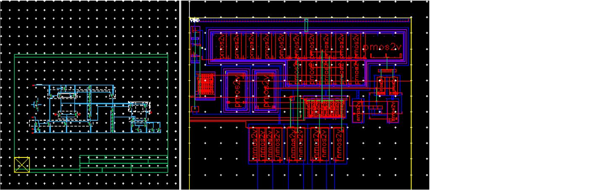
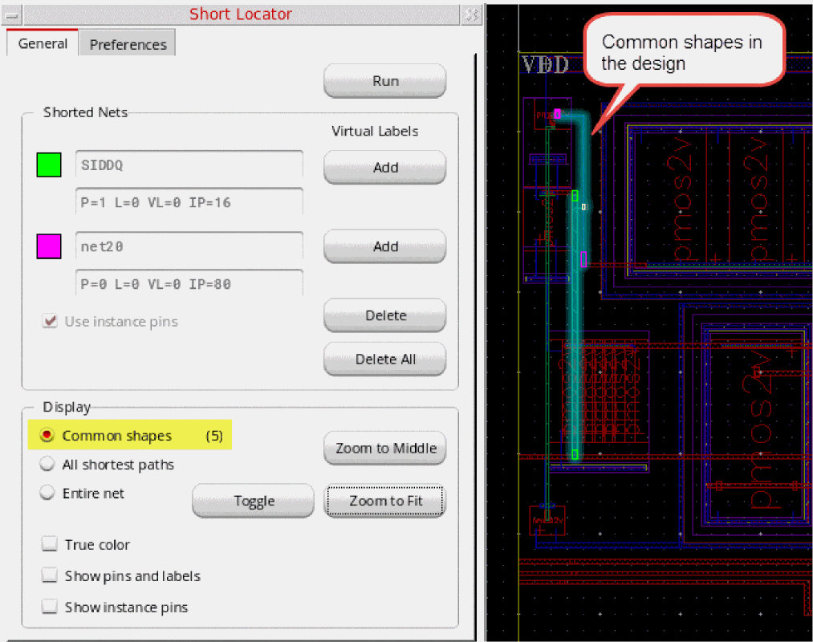
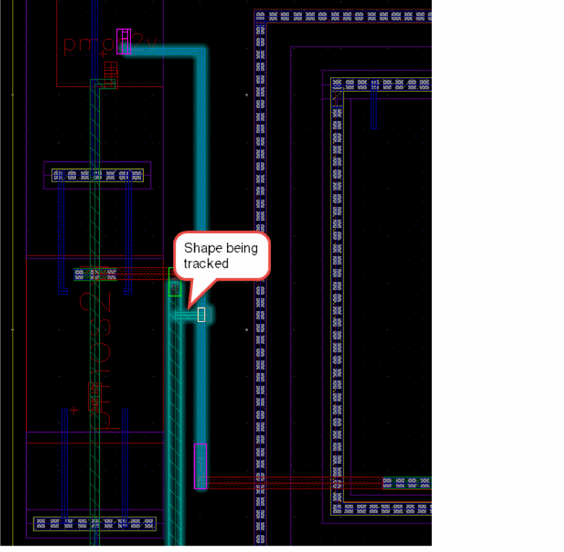
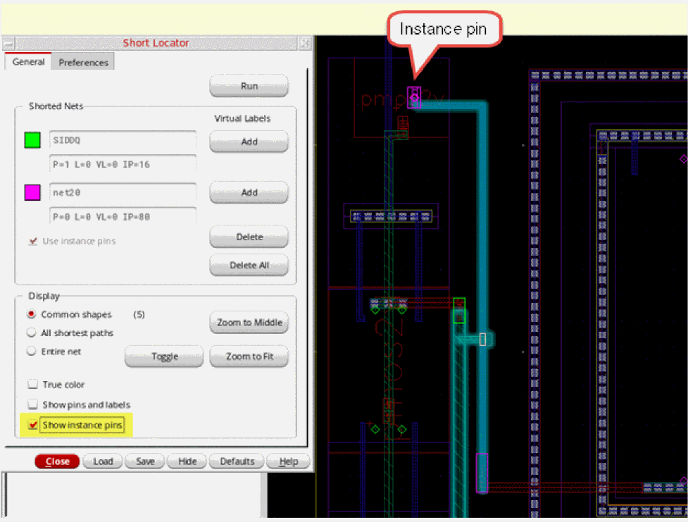
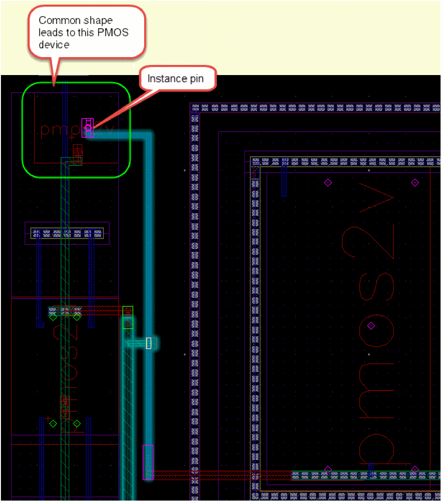
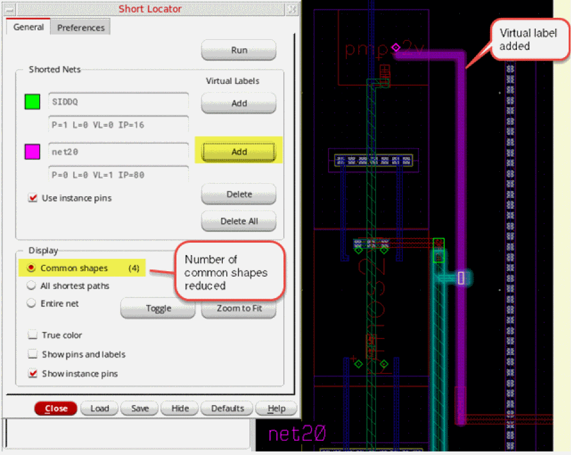
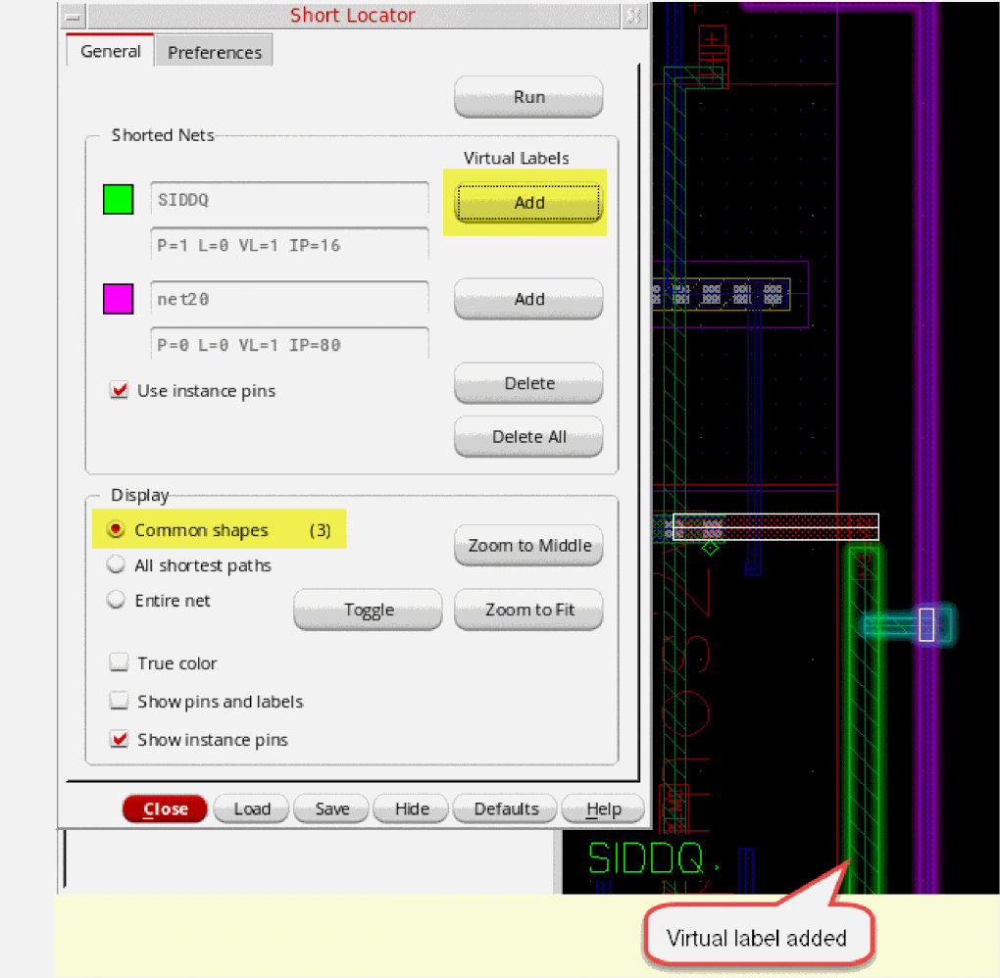

Locating the Shapes Causing the Short
If the number of common shapes is small, you can evaluate the common shapes one by one, beginning the evaluation with a shape that has known connectivity.
Let us consider the design scenario as illustrated in the figure below.

Common shapes indicates that the design has a small number of common shapes (5), as shown in the figure below. Therefore, evaluating the shapes one by one to locate the short looks feasible.

To locate the shape(s) in the design that are causing the short:
-
Because the number of common shapes in this design is small, look for common shapes connected to a known source of connectivity.
For common shapes not directly connected to a known source of connectivity, look for the T-junction. Follow the T-junction to a known source of connectivity and add a virtual label on the corresponding net to the shape forming the T-junction.
For the sample design, let us track the common shape that is highlighted in the design, till it connects to a known source of connectivity, which is the vertical path.
To view the entire path of the tracked shape, you can set the display mode to Entire net. This also highlights the shapes on the net that do not belong to the set of common shapes. -
To see the instance pin that gives the selected shape its connectivity, select Show instance pins in the Short Locator form, as shown in the figure below.
 -
Depending on the design, follow the T-junction or the source of known connectivity.
For the sample design, the common shape is connected to the terminal of a PMOS device, as displayed in the figure below.
Checking the connectivity of the layout device using the Check Against Source command can confirm that the device is connected correctly. Alternatively, you can use the Property Editor assistant to verify the connectivity of the PMOS device. Also, verify that the instance is connected to the same net in the schematic view. -
After the connectivity of the device is verified, open the Short Locator form and add a virtual label on the net,
net20for this example, to indicate that the connectivity of the common shape is known and has been verified.
To add a virtual label to the shape, click the Add button for the corresponding net. Then, click the shape in the canvas to which the virtual label needs to be added.
If the same virtual label can be applied to multiple overlapping shapes, Choose Figure to Create Virtual Label dialog box pops up. You can use the dialog box to choose the shape to which the virtual label needs to be added.
The number of common shapes is reduced due to the addition of the virtual label. -
Look at the remaining common shapes and aim to zoom on the one in the middle, as shown in the figure below.
For the sample design, let us now track the connectivity of another common shape. We find that both the ends of the common shape are connected toinstTermsof known connectivity. Therefore, we can add a virtual label to the shape, as displayed in the figure below.
Notice that the number of common shapes is reduced further. - Now continue to track the remaining common shapes, as described in the steps above. Repeat step 3 to step 5.
- After the common shapes have been brought down to a few, the shape causing the short can be visually identified. To resolve the short, the shape can be moved, stretched, or deleted, as appropriate.
Short Locator automatically updates the form and the highlights as the design is modified.
Related Topics
Locating Shorts Using Short Locator
Locating Short with Large Number of Common Shapes
Return to top